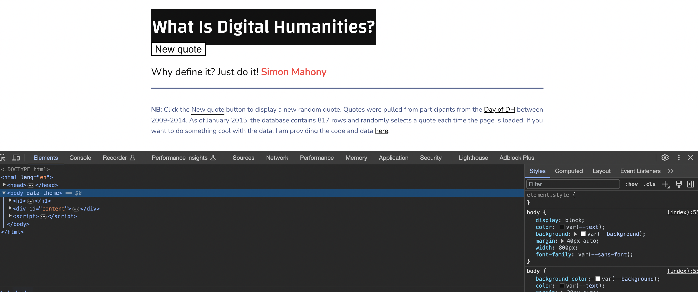
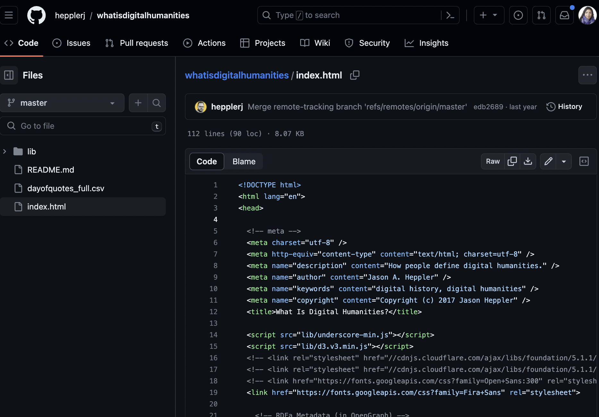

Introduction to Markup and Styling Web Documents
Last week we learned about file formats, and specifically plain text and Markdown. You’ve now had a chance to try out writing some Markdown files and have seen how they can be used to create formatted text documents. This week we’re going to take a step further and introduce you to HTML, which is the language of the web.
Introducing Markup Languages
While Markdown is very cool and useful, it technically is not a programming language, but a markup language.
So what is a markup language?
From handy Wikipedia:
“a markup language is a system for annotating a document in a way that is syntactically distinguishable from the text, meaning when the document is processed for display, the markup language is not shown, and is only used to format the text.”
So in the case of Markdown, this annotating is our use of symbols like # to add formatting to our text. This is different from a programming language like Python or JavaScript, which is used to create programs that can be executed by a computer.
Another example of a Markup language that has a long history in Computing in the Humanities is TEI, which stands for Text Encoding Initiative. TEI is a markup language that is used to encode texts in a way that makes them machine-readable. You can read more about TEI in “What Is TEI?” Text Encoding Initiative, 2022. https://tei-c.org/what-is-tei/.

Today we are used to having OCR and other tools that can help us digitize texts, and then programming languages like Python and R that let us manipulate text into data (a topic we’ll cover later in the semester). But in the early days of the web, this was not the case, which made it difficult for machines to know what was in a text. This is where TEI comes in, as it allows us to encode texts in a way that makes them useable to machines. For example, TEI often involves marking what a date is, or what a person’s name is, or what a place is. This allows us to search and analyze texts in ways that would be impossible without TEI.
TEI and HTML both were created in the same historical moment, the early days of the web. HTML was created by Tim Berners-Lee in 1991, while TEI was created in 1987.

We can see a more detailed example of what this looks like from The Proceedings of the Old Bailey, which is one of the older Digital Humanities projects that is still in operation. The project started in 1999 and has been digitizing the records of the Old Bailey, which is the central criminal court of England and Wales. The project uses TEI to encode the text of the records, which allows them to be searched and analyzed in a variety of ways. You can read more about the project here https://www.oldbaileyonline.org/.
What is so unique about the Old Bailey, as it is often called, is not just that it uses TEI and XML but also that all this markup was done by hand. Specifically, as the authors write in the history of the project:
adopt a “double rekeying” strategy for the creation of the transcript – having the text transcribed twice and then automatically compared to identify errors. In 1998, and following extensive testing, it was clear that Optical Character Recognition (OCR) software was just not good enough to automatically produce meaningful transcriptions of eighteenth-century print, particularly when applied to images from microfilm. And in the preceding decades a world-wide network of “rekeying” agencies had developed, focused on the digitisation of business records. By 1998 these agencies were keen to develop a role in the emerging field of humanities digitisation. Within just a few years OCR would take over (at least for texts with consistent print quality which were photographed to a high standard), but for the Proceedings double entry rekeying was the obvious choice, and it ensured that the transcriptions we would be working with would be 99.9 percent accurate. XML markup would not have worked with the kind of error-ridden text produced by OCR methodologies, so applying complex markup was dependant on adopting rekeying. Not only did this facilitate accurate searching, but it meant that the text could be reused in subsequent digital projects.
Such type of work is extremely laborious, but it does lead to very high-quality data. Understanding this longer history helps us now consider how and why we write HTML, but first we need to actually learn what HTML is.
What is HTML?
While TEI is still in use today, by far the most popular of all markup languages is HTML, which stands for HyperText Markup Language. HTML is the language of the web and is used to create web pages. This might be surprising to learn but when you go to a website, it is just showing you a document (just like our .txt or .md files). The difference is that this document is written and marked-up in HTML and is rendered by your browser.

According to the Mozilla website:
“HTML (Hypertext Markup Language) is not a programming language; it is a markup language used to tell your browser how to structure the web pages you visit. It can be as complicated or as simple as the web developer wishes it to be. HTML consists of a series of elements, which you use to enclose, wrap, or mark up different parts of the content to make it appear or act a certain way. The enclosing tags can make a bit of content into a hyperlink to link to another page on the web, italicize words, and so on.”
So while in Google Docs, you can use the GUI to format your text or in Markdown we use # symbol, in HTML we use a series of tags. Tags have a name, a series of key/value pairs called attributes, and some textual content. Attributes are optional.
Let’s try an example.
Creating an HTML File
First, let’s create an HTML file. To do that we need to add .html to the end of the file name.
touch first_page.htmlNow, I’m going to open the file in a text editor and add some text, just like we did with our Markdown files.
My first page!I can then save this file and open it in a browser. To do this, I can either right click on the file and select open with and then select my browser, or simply go to my preferred browser and select Open File. We’ll talk more about web browsers in the next lesson, but some popular ones include Chrome, Firefox, Safari, and Edge.
We should see our text in the browser, just like we did with our Markdown file. So everything is working so far!
Now, in that same file, try altering the code to include some HTML tags.
<p>My first page!</p>Save it and open the file in the browser again, what do you see? Notice anything different? Probably not!
But we added those tags? So how can we see them…
The trick is to inspect your webpage. To do that let’s right click on our page and select inspect.

What we’re using is called the Developer Tools Console (you can find more info on Chrome’s version here and instructions for Firefox here). What we’re seeing is called the source code.
Now we can see that our tags do exist, but what exactly are they doing and why do they look like that?

This diagram is from that same Mozilla docs, where they describe the anatomy of an “HTML element”.
The anatomy of our element is:
- The opening tag: This consists of the name of the element (in this example, p for paragraph), wrapped in opening and closing angle brackets. This opening tag marks where the element begins or starts to take effect. In this example, it precedes the start of the paragraph text.
- The content: This is the content of the element. In this example, it is the paragraph text.
- The closing tag: This is the same as the opening tag, except that it includes a forward slash before the element name. This marks where the element ends. Failing to include a closing tag is a common beginner error that can produce peculiar results. The element is the opening tag, followed by content, followed by the closing tag.
That’s a lot of information, so let’s break it down further using our example.
In our HTML page, we created an HTML element using the HTML <p> tag (p means “paragraph”). This example has just one tag in it: a <p> tag. The source code for a tag has two parts, its opening tag (<p>) and its closing tag (</p>). In between the opening and closing tag, you see the tag’s contents (in this case, the text says “My first page!”).
Let’s take a look at some of the more common HTML tags that we can use to create HTML elements https://www.w3schools.com/tags/ref_byfunc.asp
How would we make it into an HTML heading?
<h1>My first page!</h1>Great now what if we wanted to add a link so that you could click on that heading and go to another page (say the iSchool home page https://ischool.illinois.edu/)?
Well then we need to add an attribute.

This diagram is also from the Mozilla docs and you can read more about how HTML elements can also have attributes here. Some of the guidelines for using attributes are:
Attributes contain extra information about the element that won’t appear in the content. In this example, the class attribute is an identifying name used to target the element with style information.
An attribute should have:
- A space between it and the element name. (For an element with more than one attribute, the attributes should be separated by spaces too.)
- The attribute name, followed by an equal sign.
- An attribute value, wrapped with opening and closing quote marks.
Let’s try using the anchor tag and href attribute to create an HTML element that links to https://ischool.illinois.edu/
You can find a list of HTML attributes here https://www.w3schools.com/tags/ref_attributes.asp
<h1><a href="https://ischool.illinois.edu/">My first page!</a></h1>How does this new tag change our html page?
Here’s another example that we should add to our html page, using the HTML <div> tag:
<div class="header" style="background: blue;">About Me</div>In this example, the tag’s name is div. The tag has two attributes: class, with value header, and style, with value background: blue;. The contents of this tag is About Me.
Tags can contain other tags, in a hierarchical relationship. For example, here’s some HTML to make a bulleted list:
<ul>
<li>Likes Coding and History</li>
<li>Likes "What We Do in the Shadows" TV show</li>
<li>Dislikes Mint Chocolate</li>
</ul>The <ul> tag (ul stands for unordered list) in this example has three other <li> tags inside of it (li stands for list item). The <ul> tag is said to be the parent of the <li> tags, and the <li> tags are the children of the <ul> tag. All tags grouped under a particular parent tag are called siblings.
HTML is a very powerful language and there are many more tags that we can use to create HTML elements. You can find a list of all the HTML tags here https://www.w3schools.com/tags/ref_byfunc.asp. But HTML also has some limitations. Take a look at this helpful overview of HTML’s shortcomings by Alison Parrish (bold added for emphasis):
HTML documents are intended to add markup to text to add information that allows browsers to display the text in different ways—e.g., HTML markup might tell the browser to make the font of the text a particular size, or to position it in a particular place on the screen.
Because the primary purpose of HTML is to change the appearance of text, HTML markup usually does not tell us anything useful about what the text means, or what kind of data it contains. When you look at a web page in the browser, it might appear to contain a list of newspaper articles, or a table with birth rates, or a series of names with associated biographies, or whatever. But that’s information that we get, as humans, from reading the page. There’s (usually) no easy way to extract this information with a computer program.
HTML is also notoriously messy—web browsers are very forgiving of syntax errors and other irregularities in HTML (like mismatched or unclosed tags). For this reason, we need special libraries to parse HTML into data structures that our Python programs can use, libraries that can make a “good guess” about what the structure of an HTML document is, even when that structure is written incorrectly or inconsistently.
Understanding these limitations is important as we start to work with HTML and other web technologies. For more detailed information, I recommend reading through this introduction from Mozilla on HTML.
Web Styling and Interaction
So far we’ve been either working with very simple HTML documents (like our example above). To find a middle ground, let’s return to our very first week and take a look at whatisdigitalhumanities.com.

If we open the inspector, we can see that the page is made up of a series of HTML elements.

You’ll notice that on every website we inspect, the first line is <!DOCTYPE html>. This is called a document type declaration and it tells the browser what type of document it is. In this case, it’s an HTML document. Then we see the <html> tag, which is the root element of an HTML page. This element contains two other elements: <head> and <body>. The <head> element contains metadata about the document, while the <body> element contains the actual content of the document. While there are some exceptions, most of the time the <head> element comes before the <body> element, and most websites use both.
If click the small arrow in the corner, we can start selecting elements. I’m trying to select the black box that says “What is Digital Humanities?”.

While selecting elements is exciting, it can also be powerful. For example, I could change the very text or color of this element through editing it in the inspector.

Now if I reload this page, I’ll lose that change, so this is not permanent. But it does give us a sense of how we can style our webpages.
In this example, I altered two part of the HTML document:
The span element with the class title:
<span class="title">When Is Digital Humanities?</span>And then the styles that are applied to that class:
.title {
font-family: Changa, var(--sans-font);
background: #faf;
color: #fff;
padding: 3px;
}This code is something called CSS, which stands for Cascading Style Sheets. CSS is a style sheet language that essentially tells the computer how to style and display a document, whether that’s an HTML or Markdown document. We have already used it when we added the style attribute to our <div> element. One way to think about it is that HTML is the structure of the document, while CSS is the style of the document (similar to styling fonts or positioning images in a Word Document for example).
Much like HTML, CSS has a defined structure that is comprises a selector (in our case the .title) and a declaration block (the curly brackets), where you write your style rules. The selector specifies which HTML elements the rules apply to, and the declaration block contains one or more declarations separated by semicolons. Each declaration includes a CSS property name and a value, separated by a colon.
selector {
property: value;
property: value;
property: value;
}So in our example, once again the selector is .title and the declaration block contains three declarations: font-family, background, and color. Each declaration has a property name and a value. For example, the font-family property specifies the font family to use (you could change it to something like Garamond or Papyrus if you wanted), and the background property specifies the background color to use (which is what we changed from black to pink). A great resource for learning more about CSS is the Mozilla docs https://developer.mozilla.org/en-US/docs/Learn_web_development/Core/Styling_basics/What_is_CSS.
To get a better sense of what this code looks like, we can look directly at the index.html file directly in the GitHub repository https://github.com/hepplerj/whatisdigitalhumanities.

Seeing the full document, we can find both the span element we edited, as well as see how it fits within the overall structure of the HTML document. There’s also a number of other elements that we haven’t discussed yet, but I want to highlight two of them: <style> and <script>.
If we search for the <style> tags, we can see it is located between lines 42 and 58 that it contains the following code:

Some of this code looks similar to what we saw in the inspector, but the rest is difficult to read. To help us, we can break down the various elements of this code (select the toggle below to read more):
@font-face This is a CSS at-rule used to define custom fonts to be used on the website. In your code, there are two custom fonts being defined: ‘Changa’ and ‘Nunito’. The src property specifies the path to the font file, and the format('truetype') indicates the type of font format being used.
:root The :root pseudo-class matches the root element of the document, which is the html element. Inside :root, CSS custom properties (also known as CSS variables) are being declared. These variables store values that can be reused throughout the document. For example, --background is set to #fff (white), and --text is set to #111 (a very dark gray, almost black).
[data-theme=“dark”] This selector targets elements with a data-theme attribute that has the value “dark”. It’s a way to apply a different set of styles when the dark theme is active. The variables defined here override the ones set in :root when the dark theme is applied.
#darkModeToggle This targets an element with the ID darkModeToggle, which is likely a button or switch that allows users to toggle dark mode on and off. The styles here define its position and appearance.
body, h1, h2, h3, h4, h5, a, ul, etc. These are type selectors that apply styles to HTML elements directly. For instance, body styles apply to the entire body of the document, a styles apply to all anchor (link) elements, and h1, h2, h3, etc., apply to different levels of header elements. These styles define things like colors, fonts, margins, and padding.
::-webkit-details-marker, .body th, .limiter, .pad1, etc. These are a mix of pseudo-elements and class selectors. Pseudo-elements like ::-webkit-details-marker apply styles to specific parts of an element (in this case, the default disclosure triangle in details elements in WebKit browsers). Class selectors like .limiter apply styles to any element with that class.
@media These are media queries that apply styles only when certain conditions are met, such as the screen width being within a specified range. This is used for responsive design to ensure the website looks good on devices of all sizes.
.code, li code, .m, .s, .no, .k, etc. These class selectors apply styles to elements with the respective classes, often to style code snippets or certain text elements with specific colors to differentiate them, like syntax highlighting in a code editor.
button, button:hover These selectors define the styles for button elements. The button:hover selector applies styles when the user hovers over a button with their mouse, providing a visual cue that the button is interactive.
Why write code like this?
Overall, CSS is used to enhance the user experience by providing a visually appealing and functional interface. It allows web developers to:
Apply custom styles to their web pages, making them look unique.
Define responsive designs that adapt to different screen sizes and devices.
Implement theme toggling (like dark mode) to enhance accessibility and user preference.
Ensure that the presentation of the content is consistent across different browsers and platforms.
So here we can see that the .title code we altered is actually part of a larger set of code that is used to style the entire website. This example hopefully shows how powerful and complex web development can be.
A great example of CSS in action is the CSS Zen Garden, which shows how the same HTML document can be styled in a variety of different ways. Another great example is this CodePen that shows how CSS can be used to create a 3D airplane (I found it via this blog post).
CSS therefore can be used to style our webpages, but it can also be used to add interactivity to our webpages.
The main other tag that we should pay attention to is the script element is the other way that interactivity happens on most websites. If we search for the <script> tags, we can see it is located between lines 80 and 109 that it contains the following code:

This code is in a language called JavaScript. This code is using a JavaScript library called jQuery, which is a library that makes it easier to write JavaScript. Unlike HTML or CSS, JavaScript is a programming language (the distinction is not crucial to know but can be helpful when learning about different Digital Humanities methods). At this point, most of the web is powered by JavaScript, so it is incredible powerful and ubiquitous.
If you want to learn more about what exactly this code is doing, toggle the following section. Full disclosure some of this language and concepts are fairly advanced, so feel free to use Co-Pilot or ask the Instructors for help:
This script is written in JavaScript and uses the D3.js library, which is a powerful tool for creating dynamic and interactive data visualizations in web browsers. It also uses Lodash (indicated by _), which is a utility library that makes JavaScript easier by taking the hassle out of working with arrays, numbers, objects, strings, etc.
Here’s what each part of the script is doing:
Loading Data
d3.csv("dayofquotes_full.csv", (error, quotes) => {
if (error) throw error;
...
});This part of the script uses D3’s csv method to load data from a CSV (Comma-Separated Values) file named “dayofquotes_full.csv”. The callback function (error, quotes) => {...} is executed once the data is loaded. If there’s an error during the loading process, it throws the error, which will stop the execution and typically print an error message to the console.
Displaying a Random Quote
randomQuote = _.sample(quotes, 1);Using Lodash’s sample function, the script selects one random item from the quotes array.
Appending Text to the DOM
const svg = d3.select("#quote_text");
const texts = svg.selectAll("text")
.data(randomQuote)
.enter();
texts.append("text")
.attr("class", "quote_text")
.text(d => d.quote );
texts.append("text")
.attr("class", "quote_source")
.text(d => " " + d.name );This part of the script selects an SVG element with the ID quote_text and binds the randomQuote data to text elements within that SVG. It then enters the data-join, which is a way of joining data to DOM elements. For each quote, it appends two text elements to the SVG: one for the quote text and one for the quote source (the person who said the quote). It sets the class for each text element so that they can be styled with CSS.
Updating the Quote
d3.select("#update_quote").on("click", () => {
randomQuote = _.sample(quotes, 1);
d3.select(".quote_text").text(d => randomQuote[0].quote);
d3.select(".quote_source").text(d => " " + randomQuote[0].name);
});This part sets up an event listener for a click event on an element with the ID update_quote. When the element is clicked, the script selects a new random quote and updates the text content of the elements with the classes quote_text and quote_source to display the new quote and its source.
Why Write Code Like This?
The purpose of this script is to:
- Dynamically load and display content from a data file (in this case, quotes).
- Provide interactivity to the website, allowing users to see a new random quote every time they click the “update_quote” button.
- Use D3.js library to bind data to the web page, which is a common pattern for creating data-driven documents. This is especially useful for visualizations, as it allows the data to directly drive the presentation.
- Enhance the user experience by providing fresh and interesting content each time the user interacts with the quote section.
This script is a good example of how modern web technologies can be used to create interactive and dynamic web pages that engage users with content.
To put this more simply, imagine a webpage as a tree with many branches. Each branch and leaf could be a piece of text, a picture, or a button. This tree is what we call the DOM, which stands for Document Object Model. It’s a way of describing the structure and contents of a webpage in a way that programming languages like JavaScript can understand and manipulate.
Now, let’s break down what the script does step by step:
Loading the Quotes
- The script starts by asking for a list of quotes from a file named “dayofquotes_full.csv”. Think of this like opening a book to find a bunch of quotes.
Showing a Random Quote
- Once it has the list of quotes, the script picks one at random. This is like closing your eyes and pointing to a random quote in the book.
Putting the Quote on the Page
- Next, the script places this random quote onto the webpage. It finds the place where the quote should go (like putting a bookmark on a page) and writes the quote there.
Changing the Quote
- The script also waits for you to ask for a new quote by clicking a button on the page. When you click the button, it picks another random quote from the list and changes the current quote to the new one. It’s like flipping to another page in the book and reading a different quote.
Why Do It This Way?
The reason for writing a script like this is to make the webpage interactive and interesting. Instead of seeing the same quote every time, you get a surprise each time you click the button. It’s a way to keep the website fresh and engaging for visitors.
Now we can start to understand that the code in the script tag is what controls what happens on each page load, whereas the code in the style tag controls what the page looks like.
These three technologies, HTML, CSS, and JavaScript, are the three pillars of the web. They are what make the web interactive and dynamic. They can also often make websites slow to load (for example, large JavaScript files can take a long time to load) and difficult to maintain (until recently, each line of code was written by humans).
In the case of whatisdigitalhumanities, we can even see this effort by exploring the insights page on the GitHub repo, which shows the following graph of the number of commits over time.

Available at https://github.com/hepplerj/whatisdigitalhumanities/graphs/contributors
Homework: Source and Style
The assignments below are intended to help you start to explore both some of the web technologies and markup languages we’ve discussed, as well as try your hand at using them. Do your best to get through both assignments, and reach out for help from the Instructors if you get stuck.
Once you’ve completed the assignments you should push up your materials to your GitHub is310-coding-assignments repository. These materials should be in a new folder source-and-style and share the link to your folder in the GitHub discussion thread https://github.com/CultureAsData-UIUC/is310-spring-2026/discussions/3.
Assignment 1: Inspecting the Cultural Web
To build from your group assignment on Mass Digitization & Digital Libraries, for this assignment, the goal is to select one of the digital libraries or archives you’ve identified as relevant to your cultural area of focus, and inspect the website in the browser to try and assess how it has been built (you might even see if you can find the GitHub repository for it). In your investigation, you should try and answer the following questions:
- What web technologies (that is HTML, CSS, or JavaScript) were used to build the tool? Are there files that end in
.html,.css, or.js? What about files you don’t recognize? - Who built this website? How many people were involved? How can you tell?
You can use screenshots to support your assessment, but you should also include a link to the website and the GitHub repository (if you can find it). You are also welcome to use AI tools to help you assess and investigate the web technologies. You should write your assessments in the README.md file in the source-and-style folder of your is310-coding-assignments repository, and remember to place any screenshots in an images folder (you will need to create a new one for this folder if you decide to include screenshots).
Assignment 2: Styling the Cultural Web
For this assignment, the goal is to try creating an HTML page from scratch that presents ONE of the digitized cultural objects you are exploring for the group assignment. You should create a file called index.html in the source-and-style folder of your is310-coding-assignments repository. You can use the terminal to create the file or your text editor, but the file should be created in the source-and-style folder.
This HTML file should include the following elements:
In terms of content, you should include the following about your digital object:
You’re welcome to add any other elements you want (like CSS for styling for instance!), but these are the minimum requirements. Once you’ve created your file you should open it in your browser and inspect it to make sure it looks the way you want it to. And then you should push it up to GitHub.
As a reminder our standard git workflow is:
git add .
git commit -m "Completed Source and Style Assignment"
git push origin mainIf you have any questions or need help, please don’t hesitate to use Co-Pilot or reach out to the Instructors for help.